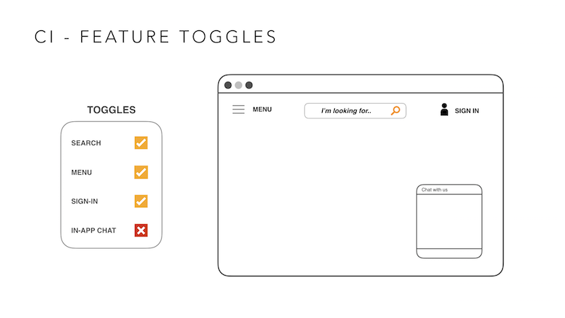
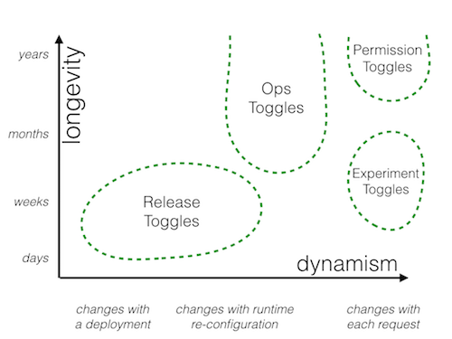

This is the third post in the series - CD of Microservices. In the previous post, we talked about testing strategy for building CD pipelines on microservices architecture. In this post, we’ll get deep into CI practices.
Continuous integration
Continuous integration is a key practice in a successful continuous delivery strategy. Simply defined, it’s a practice that requires developers to integrate their code into a shared repository several times a day. Every checkin is verified by an automated build, allowing teams to detect problems early.
We’ll focus on two key practices, trunk based development and feature toggles. These two go a long way in implementing a simple and robust CI process.
Trunk Based Development
In trunk based development (TBD), developers collaborate on code in a single branch called “trunk”. The key benefit is to avoid drift in development branches and the resulting merge hell.

This is contrary to the practice of maintaining long-lived feature and release branches. In a branching model, though you may be running builds on individual branches, arguably you aren’t doing continuous integration. In trunk based development, you should never find your trunk in a state where your CD process is unable to deploy. All code should be checked into trunk, built and tested constantly, and the codebase deployable on demand: all of this make CD a reality.
TBD results in much simpler CD workflows: you don’t have to build multiple branches in parallel, map branches to environments and re-test when the same features get merged to trunk. Simplifying workflows is very important in the context of microservices, as the complexity is exasperated as the number of microservices grows.
Feature toggles is an important technique for TBD.
Feature Toggles
Feature toggles enable commits of a combination of work-in-progress and completed features. With these toggles, you can turn off the manifestation of incomplete features in production, until the features are dev complete and tested sufficiently in pre-production environments.
Here is a very simple example. The team are working on four features for the same application: search, menu, sign-in and in-app chat. The in-app chat feature is incomplete (but you still check into trunk in TBD) or you find issues with the in-app chat in pre-production testing. With feature toggles, you can simply turn in-app chat off, even at run time.

Feature toggles are usually stored in a specification or configuration file close to the codebase and used by automation in the CD pipeline to turn toggles on in specific environments. They are just conditions in your code base.You should separate setting these toggles from the actual release process so that you can control it in run time.
Some things you should consider when implementing feature toggles:
Feature toggles should be short lived
Feature toggles should be discarded once a feature has gone through the development lifecycle and is turned on in production. They are considered to be a code debt that needs to be cleaned up.
Use tooling to manage toggles’ lifecycles
Don’t underestimate the amount of effort required to manage these toggles. You can easily run into hundreds of them. Use tooling which provides visibility into the list of toggles, what’s turned on in which environment, and which features will get turned on in production in the next release.
Consider building your own utilities
There isn't a lot of tooling out there, so consider writing your own utilities to solve some of these problems. Again, getting this tooling in place before you go down a microservice strategy is a wise thing to do.
Once you have a mechanism for maintaining feature toggles, you could use the same mechanism to introduce other categories of toggles:

This diagram is borrowed from my colleague Pete Hodgson, who has written a lot about toggles. In this diagram, release toggles is defined as toggles that control access to unfinished code, which is same as feature toggles.
Ops toggles control the behavior of production code. Retail sites that have heavy seasonal traffic use Ops toggles to provide a degraded experience when they have peak loads. For example, when Apple is releasing a new iPhone and it's getting a crazy amount of traffic coming in just to buy the iPhone, they can turn off features like user recommendations during peak time to support the sales transactions.
Permissions toggles are used to turn on specific behavior for privileged users, such as admin features, or provide a guest user browsing experience.
Experimental toggles are used for multivariate testing. It is used to test how well a feature is received before you make it permanent. It's the same as A/B testing.
One thing to note is that each of these categories of toggles has a very different lifecycle and different way to be turned on and off. You need to plan accordingly. Release toggles generally are more short-lived and only live for the duration of a few releases. Once the feature is completely released, you get rid of the toggle and remove your technical debt. An ops toggle is used frequently for functionality in production, so it lives for much longer.
Summary
This is the part 3 of our CD of Microservices blog series. We have talked in depth about CI practices, in particular trunk based deployment and feature toggles. In the next post, we will talk about the third consideration: environment strategy.